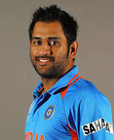
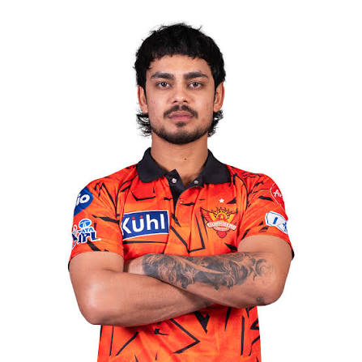
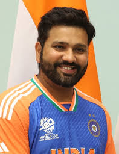

| S.No | Description | images |
|---|---|---|
| 1 | **Ishan Kishan** is an Indian international cricketer and a talented wicketkeeper-batter. He was born on **18 July 1998** in **Patna, Bihar**. He is known for his aggressive left-handed batting and quick scoring ability. Ishan represents **Jharkhand** in domestic cricket and has played in the **Indian Premier League (IPL)**. He made his debut for the Indian cricket team in **2021** and gained worldwide recognition by scoring a brilliant **ODI double century**, becoming one of the youngest players to achieve this milestone. His energetic style of play, excellent wicketkeeping skills, and match-winning performances have made him a valuable player for Indian cricket. |
|
| 2 | International Captaincy: Led India in 331 matches (the most by any captain) and remains the only captain in history to win three different limited-overs ICC tournaments: the 2007 T20 World Cup, 2011 Cricket World Cup, and 2013 Champions Trophy.Retirement: Stepped down from limited-overs captaincy in 2017, retired from international cricket on August 15, 2020, but continues to play in the Indian Premier League (IPL).IPL Legacy: Affectionately known as "Thala", he led the Chennai Super Kings to five IPL titles (2010, 2011, 2018, 2021, and 2023). |  | 3 | Kohli was the captain of the 2008 U19 World Cup winning team and was a crucial member of the Indian teams that won 2011 Cricket World Cup, 2013 Champions Trophy, 2024 T20 World Cup, and 2025 Champions Trophy. He plays for Royal Challengers Bengaluru in the Indian Premier League and for Delhi in domestic cricket. In 2013, Kohli was ranked number one in the ODI batting rankings. In 2015, he achieved the same in T20I cricket. In 2018, he was ranked number one in Test cricket, making him the only Indian to hold the top spot in all three formats. He is the first player to score 20,000 international runs in a decade. He was the Cricketer of the Decade for 2011 to 2020. |
|
| 4 | **Ishan Kishan** is an Indian international cricketer and a talented wicketkeeper-batter. He was born on **18 July 1998** in **Patna, Bihar**. He is known for his aggressive left-handed batting and quick scoring ability. Ishan represents **Jharkhand** in domestic cricket and has played in the **Indian Premier League (IPL)**. He made his debut for the Indian cricket team in **2021** and gained worldwide recognition by scoring a brilliant **ODI double century**, becoming one of the youngest players to achieve this milestone. His energetic style of play, excellent wicketkeeping skills, and match-winning performances have made him a valuable player for Indian cricket. |  | 5 | International Captaincy: Led India in 331 matches (the most by any captain) and remains the only captain in history to win three different limited-overs ICC tournaments: the 2007 T20 World Cup, 2011 Cricket World Cup, and 2013 Champions Trophy.Retirement: Stepped down from limited-overs captaincy in 2017, retired from international cricket on August 15, 2020, but continues to play in the Indian Premier League (IPL).IPL Legacy: Affectionately known as "Thala", he led the Chennai Super Kings to five IPL titles (2010, 2011, 2018, 2021, and 2023). |  |